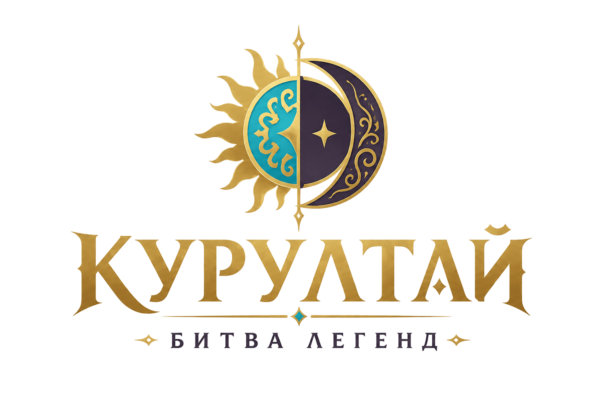

Мобильное приложение-компаньон для настольной игры: энциклопедия персонажей, викторина, правила и информация о проекте.
«Курултай: Битва легенд» — это цифровой компаньон к настольной игре, который помогает игрокам изучать персонажей, проходить викторину и применять знания во время партии.
Исторические, мифологические и авторские персонажи настольной игры.
Фракция
Тип
Вопросы Курултая влияют на ход настольной партии.
Как использовать приложение во время партии.
Приложение используется как цифровой компаньон к настольной игре. В нём игроки могут читать энциклопедию персонажей, уточнять правила и проходить викторину, которая влияет на ход партии.
Викторина связана с механикой «Вопроса Курултая». Игроки отвечают на вопросы по истории, культуре, мифологии и персонажам игры.
В приложении используются два варианта викторины, которые по-разному влияют на ход партии: короткий «Вопрос Курултая» и расширенная викторина по карте «Вопрос Курултая».
Один раз за раунд игрок может объявить «Вопрос Курултая» без розыгрыша специальной карты. В этом случае он отвечает только на один вопрос.
Если игрок разыгрывает специальную карту «Вопрос Курултая», он проходит серию из пяти вопросов подряд.
Бонусы викторины не должны полностью отменять основные правила игры. Они используются как дополнительные небольшие преимущества, чтобы сохранить баланс партии и связать образовательную часть приложения с игровым процессом.
Приложение создано как мультимедийное дополнение к настольной карточной игре «Курултай: Битва легенд».
Энциклопедия знакомит пользователя с персонажами татарской истории, фольклора и авторскими образами, а викторина закрепляет знания.
Приложение реализовано на HTML, CSS и JavaScript и может быть размещено через GitHub Pages. Формат PWA позволяет добавить его на главный экран смартфона.